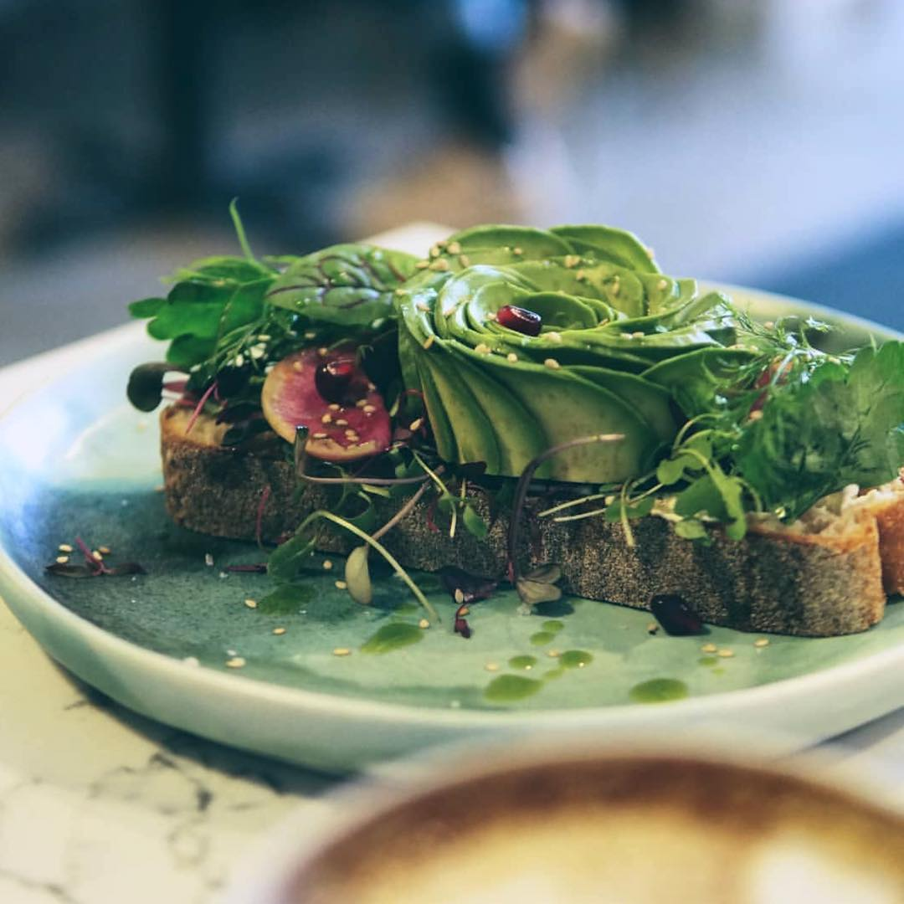
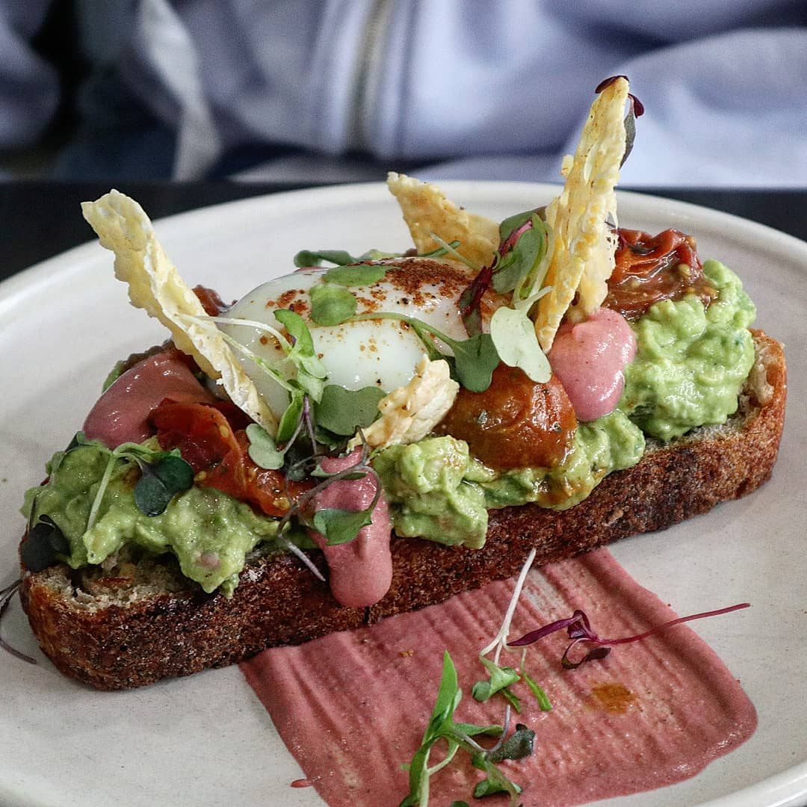
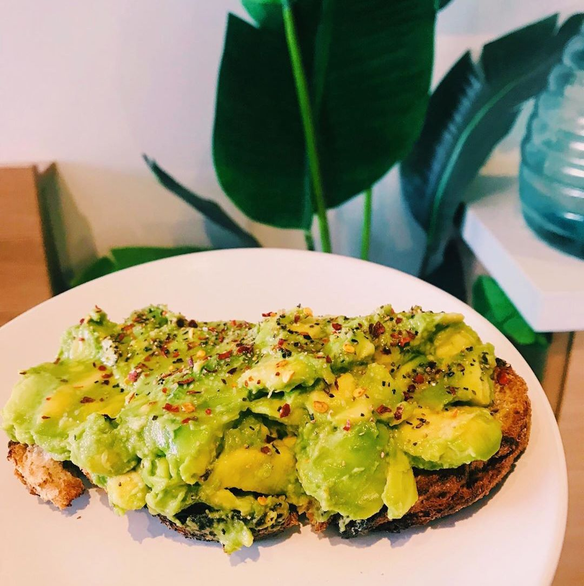
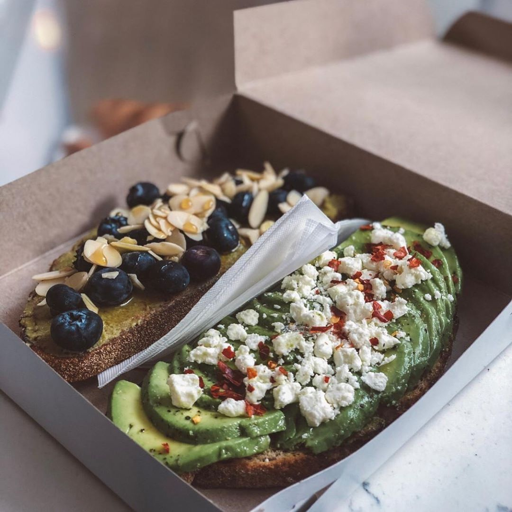
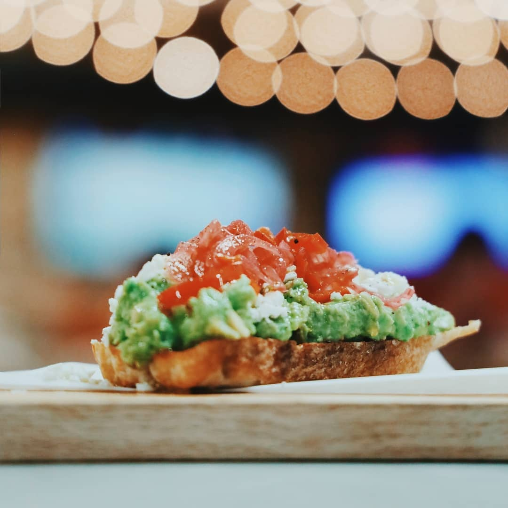

Let’s be honest, smashing an avocado and spreading it over a piece of toast is nothing revolutionary, but it somehow managed to become everyone’s obsession over the last few years. We can't seem to be getting enough of it; it's delicious, it's nutritious, and it looks hella good on our social media feed. It's fair to say that this Australian inspired breakfast trend is here to stay. Toronto has not only jumped on the band wagon, but if you ask us, it has been killing the avocado toast game. Here’s our top five spots where you get your fix, whether you like to keep it simple or want to spice things up, there’s an avocado toast for you out there!
Early Bird Coffee // @earlybirdbrew
Famous for the aesthetic avocado rose, this place screams Instagram worthy. You just can’t skip the picture when your food looks THIS good. It can also be made gluten-free by trading the bread for a baked sweet potato!
Baddies // @baddies.caf
The NUE-AVO toast. Avocado, smashed peas, roasted heirloom tomatoes, bissara, cheddar crisp, jalapeño butter on DRAKE sourdough. We're far from the basic avocado on toast here, but it works and there's nothing "bad" with that ;)
Bluestone Lane // @bluestonelane
This Aussie Cafe is introducing the authentic avocado smash to Torontonians. No BS, just the good stuff.
Versus Coffee // @versuscoffee
The secret is in the topping. Perfectly sliced avocado sprinkled with fresh goat cheese. Name a better combination. We’ll wait.
Creeds Coffee // @creeds.to
Avocado, feta cheese, pickled onions & red chilis on the freshest sourdough bread (100% organic!). Layers of flavour and a variety of textures, that’s what we’re talking about. #BrunchIsServed
The art of avocado toast is a real thing, with the way the avocado is prepared, the quality and thickness of the bread and all the garnishes and toppings, all of those places are doing an incredible job at keeping it fresh and exciting for our taste buds in their own unique way.
We want to hear from you! Which place is your favourite? How do you feel about avocado toast?
Blog by GL's very own Marie-Lyne B.
marielyne@goslingslanding.ca
blogGL
The Battle of the Avocado Toast
January 2020
-
Early Bird Coffee

Baddies
Bluestone Lane
Versus Coffee
Creeds Cofee